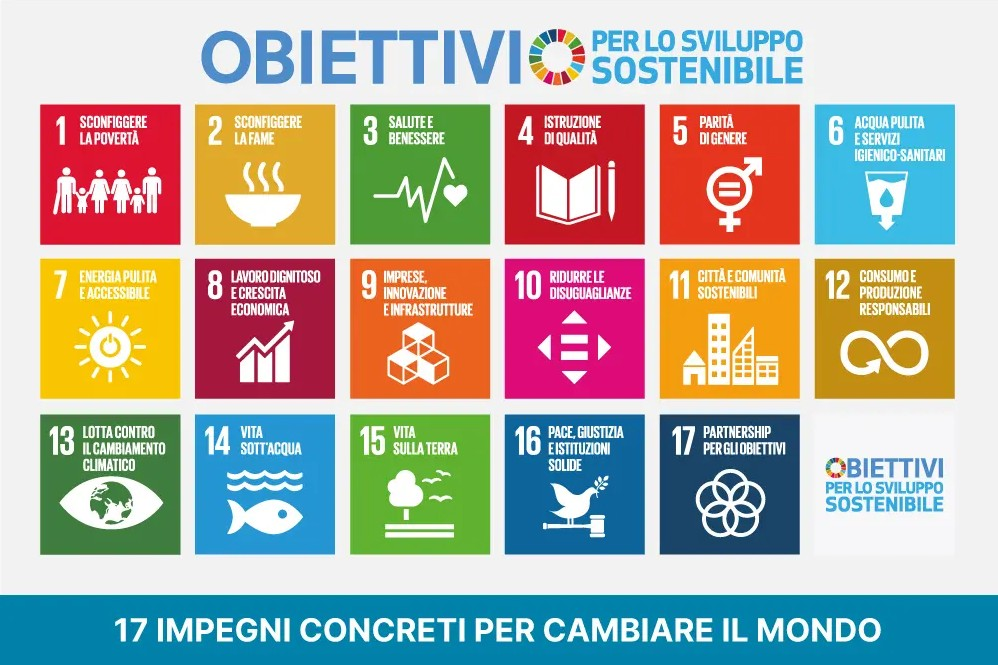

L'Agenda 2030 è il programma globale delle Nazioni Unite
adottato nel 2015: 17 Obiettivi
di Sviluppo Sostenibile per
porre fine alla povertà,
proteggere il pianeta e garantire
pace e prosperità.

Cinque pilastri interconnessi guidano ogni obiettivo, pensati per agire
insieme e non in isolamento
Eliminare povertà e fame. Garantire dignità e uguaglianza per ogni essere umano
Proteggere la biosfera e combattere il cambiamento climatico per le generazioni future.
Una vita prospera e appagante
in armonia con la natura.
Promuovere società pacifiche, inclusive e sicure, libere dalla paura e dalla violenza.
Attuare l'agenda con un forte partenariato globale di
solidarietà.
Mancano appena cinque anni all'appuntamento con il 2030, ma a livello globale molti degli obiettivi dell'Agenda 2030 per lo sviluppo sostenibile non sembrano raggiungibili. Solo il 17% degli obiettivi è in linea con le previsioni, cioè è sulla buona strada per essere raggiunto entro il 2030; quasi la metà mostra progressi minimi o moderati e oltre un terzo è in fase di stallo o regresso
- BAN KI-MOON, EX SEGRETARIO GENERALE ONU